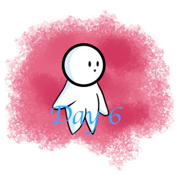

ABOUT US
Hello there! AmourMalang is a website where you can find interesting things that we discovered along our journey throughout Malang. Here you will be able to see what wonders Malang has to offer, all its tourist attractions, educational places, museums, monuments, structures and many more! Well, What are you waiting for? Let's jump straight into the adventure!
However, before we start the adventure let us introduce you to our crew: Draven, Stevie & Marshanda!
DRAVEN
Draven is one of the members of our crew. His role is the leader of the group. In Malang he interacted with some of the people in Donomulyo village, and also interviewed some visitors and workers in museums located in Malang, such as in the Bagong Human Body museum and the Transport Museum. Draven uses his prior knoledge to help his team and his friends come across new experiences whilst exploring in Malang. He supports the idea of learning new things throughout the journey. He is most excited for seeking new things that are usually elusive in our own city. Like their culture, items and lifestyles. He is also the programmer of the "Amour Malang" website and the one that published/printed out our "AmourMalang" magazine.
STEVIE
Stevie is also one of the members of our crew, and has a very important role of taking pictures of Malang's wonders. She also interacts with people, and do interviews. She is also a very curious person when it comes to the natures and the culture of Malang itself, due to its very different lifetstyle compared to ours. She also likes to support her own group, and even other friends along the way. She is the most interactive in the group and can be a very big help when needed. She is the web designer of the "Amour Malang" website and is the one that did the majority of our "AmourMalang" magazine's components, like the cover.
MARSHANDA
Marshanda is also one of the mebers of our crew, she has the
role of coordinating the team, she is the one that keeps our documents, folders, notes and information about this project. She is the most technical when taking notes of really important information in Malang, especially if it has anything to do with food. She interacted with people in Donomulyo like the rest, and she looks forward towards the activities that all of us did in Malang. Like activities in Donomulyo village, and many other activities that are much different than our own activities here. She is also compassionate when it comes to sharing information, pictures or notes to other people. She is the video editor of the "Amour Malang" website and is the one that made the contents page and compiled all of the components of our "Amour Malang" magazine into one document, ready to be published.